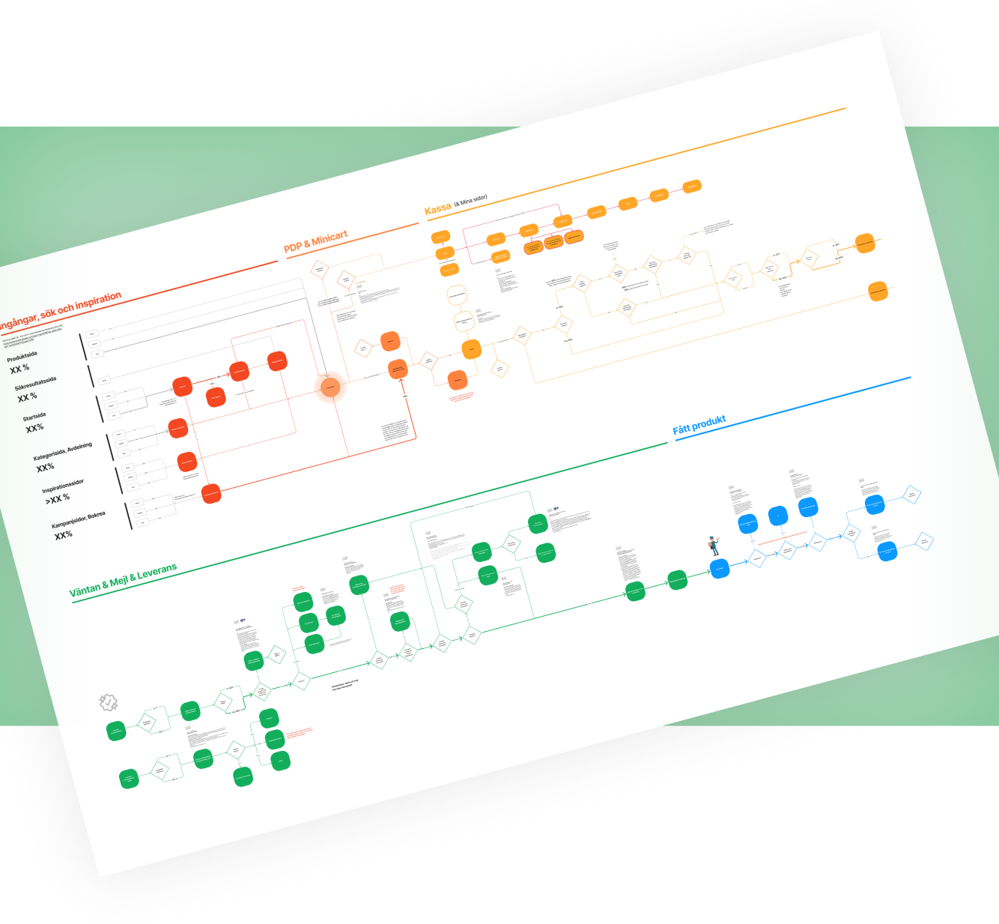
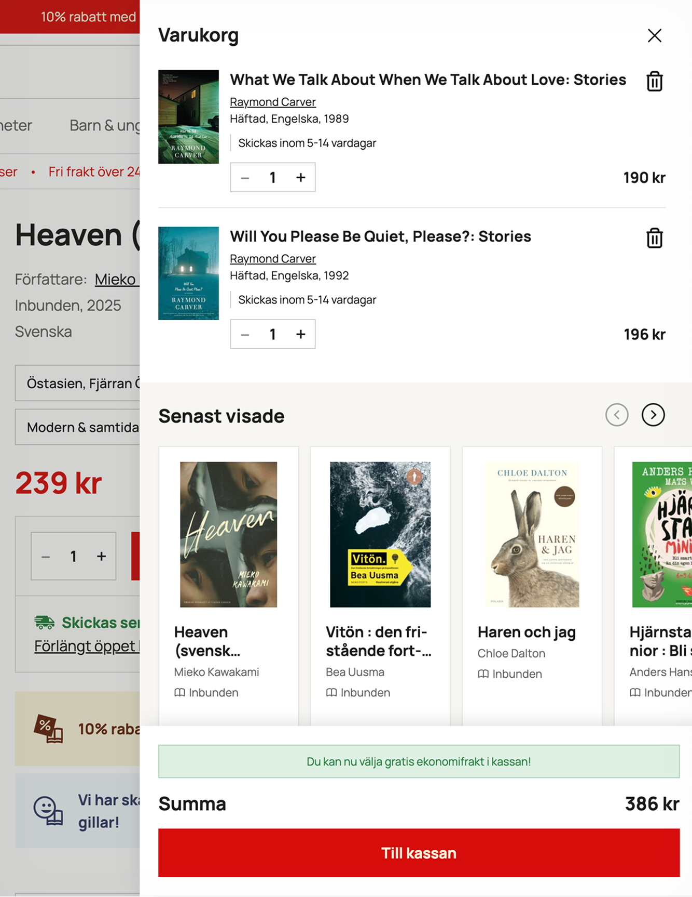

Adlibris
Rebuilding the Nordic e-commerce giant
Background
Adlibris is one of the largest online bookstores in the Nordics, offering a wide selection of books, office supplies, crafts, and educational materials. Their mission is to inspire more people to read, learn, and create. Like many companies with a long digital history, Adlibris had built up a large and complex legacy codebase over the years. This made it increasingly difficult to maintain the site and slowed down the pace of development.
I joined during a major transition. The company had just begun a full migration from its legacy infrastructure to a modern web platform. Beyond the technical challenges, this was also a chance to rethink and improve the entire user experience, from browsing and buying to delivery and post-purchase.
Buying Experience
I started at Adlibris as a UX/UI Designer in the Buying Experience team. We owned everything from product pages and “My Account” to wishlists, cart, checkout, login flows, delivery tracking, post-purchase experiences and the full shipping and delivery flow. Early on, I collaborated closely with data analysts to understand how users moved through the site and which channels were most and least used. It quickly became clear that regardless of how users arrived, whether through search engines, direct traffic or internal navigation, they almost always ended up on the product pages. That insight made product pages a natural starting point for both migration and design improvements.

Complete rebranding, design systems and user testing
In parallel with the work with Buying Experience I worked closely with stakeholders, leadership and an external branding agency to develop a new visual identity for Adlibris. This included a complete overhaul of the logo, typography, color palette and overall tone of voice. When I joined, Adlibris had neither a design system nor any established user testing tools in place so setting this up became an early priority.
We began building the design system with everything on a single Figma page to get a good overview of components, assets and layouts. We knew it would need to be split into modules later for performance reasons, but the overview was helpful early on. Working with design systems is always a balance. On one side, you want a smart and reusable system. On the other, it has to be practical and maintainable. It’s easy to overthink and build something too “clever” for your own good.
I also began evaluating different user testing platforms. We eventually landed on UserBrain, thanks to its flexibility and cost-effectiveness. It allowed us to quickly validate Figma prototypes and gather fast, actionable feedback from users around the world. It also proved especially helpful when testing early product page layouts. The ability to run quick, iterative tests helped strengthen our design decisions and laid the foundation for a culture of continuous user validation.
 Material from rebranding work
Material from rebranding work
Delivery Expectations: Showing, Not Telling
One of the most fundamental UX challenges at Adlibris was communicating delivery times clearly, especially when an order contained both in-stock and out-of-stock items. In these cases, the entire delivery could be delayed, but that information was often lost or overlooked. Studies showed that users consistently missed warnings placed outside the immediate context of the product. It wasn’t that the message wasn’t there, it just wasn’t seen. To solve this, we focused on placing delivery information directly next to the relevant product, both in the cart and at checkout. We kept the messaging short, specific and visually tied to the product card. The goal was to make it clear and intuitive: this product may delay your order. By bringing the message closer to where user attention already was, we significantly improved understanding, reduced customer service issues and made delivery expectations easier to grasp. We were a bit nervous before launch. There was a real concern that transparency around delayed delivery might discourage users from completing their purchases. But the opposite turned out to be true. Sales numbers stayed steady while customer service cases related to delivery expectations dropped. Clearer communication didn’t scare users off. It built trust.
Launch of New Product Pages and Cart
To avoid hurting SEO or disrupting user behavior, we decided to go for a near one-to-one migration of the old product pages into the new tech stack. That way we could improve performance and architecture while keeping the UX stable. Once the new pages were in place, we started introducing improvements through a long series of carefully controlled updates. Each change was rolled out gradually, tested, and evaluated to make sure it actually added value before moving on to the next.
 A new cart design. Thoroughly tested and iterated.
We supported the rollout with continuous A/B testing using Dynamic Yield and Bloomreach. While A/B testing might not be a perfect solution for all problems it can still provide fast feedback about whether a new feature is helping or hurting.
 Adding images and delivery dates to variants
Adding images and delivery dates to variants
Cross-Selling and Circular Shopping
Several concepts for cross-selling were explored, including personalized product lists in the cart and on product pages. Part of this work involved establishing a hierarchy for determining how relevant different products might be to a given user. This helped guide both design and logic behind recommendations, and ensured that cross-selling efforts felt helpful rather than intrusive. In collaboration with Campusbokhandeln, we also introduced second-hand offers on the Adlibris main site to guide users toward more circular shopping habits. The goal was to support sustainability while also highlighting more affordable options for the user.
Weekly Design Reviews
To create a sense of urgency I introduced a weekly Design Review format to make design work more transparent and structured. Every Monday started with a kickoff together with PMs. Every Friday, I presented what had been done during the week; research insights, sketches, user tests, prototypes, and final UI work.
This helped PMs get involved earlier in the design process. It also created a good tempo and rhythm in the work. This was a practical example of something I believe strongly in; for design to succeed, it needs buy-in across product, tech, business, and from the users.
Internal Orders
One of the most exciting parts of working with Adlibris was the variety of projects. A good example was an internal order management tool, which we built using the same component library as the main site. The system handled internal orders, discards of unsellable goods, and donations. I ran internal user studies and worked closely with the staff who would actually use the tool. This helped ensure the interface supported their daily workflows right away. After launch, we continued to iterate in tight loops, driven by feedback and new needs as they emerged.
Accessibility: Even more so
Accessibility has always been a key part of my UX/UI design process, but with the new accessibility directive coming into effect in 2025, it became essential to raise the bar even further. We initiated a rigorous accessibility project focusing on screen reader support, keyboard navigation and overall compliance. Tools like Lighthouse and Aceit were used to audit and improve all key pages and user flows across the site. This work not only ensured legal compliance, but also improved the experience for all users.
React Coding
As backend and frontend developers got deep into complex infrastructure work, design implementation started falling behind. Since I have a frontend background, I stepped into the React codebase and Contentful setup. I built and maintained several design-related components and features, things that otherwise would’ve been delayed or deprioritized. This hands-on work helped make sure the designs were implemented correctly and saved time for the dev team. It also made it easier to tweak small but important things without needing to ask for help.
A Broader Perspective
To make sure the design system and new brand were rolled out consistently, I also got involved in other parts of the company. That included B2B and B2G projects, marketing, content creation, and the integration of Campusbokhandeln into the Adlibris platform. This gave me a broader view of the ecosystem and helped me contribute beyond product design, making sure that the experience felt consistent no matter where users encountered the Adlibris brand.
When AI Exploded
During my years at Adlibris, AI became a real force to be reckoned with. Tools like Sana, Copilot and ChatGPT accelerated most of my workflows, not by replacing the work itself, but by acting as ever-present collaborators, teachers, creative sparring partners, trend analysts and coding assistants. This shift also made it possible for me to dive even deeper into coding, especially with React and Tailwind, and it also significantly increased the speed and precision of my design process.